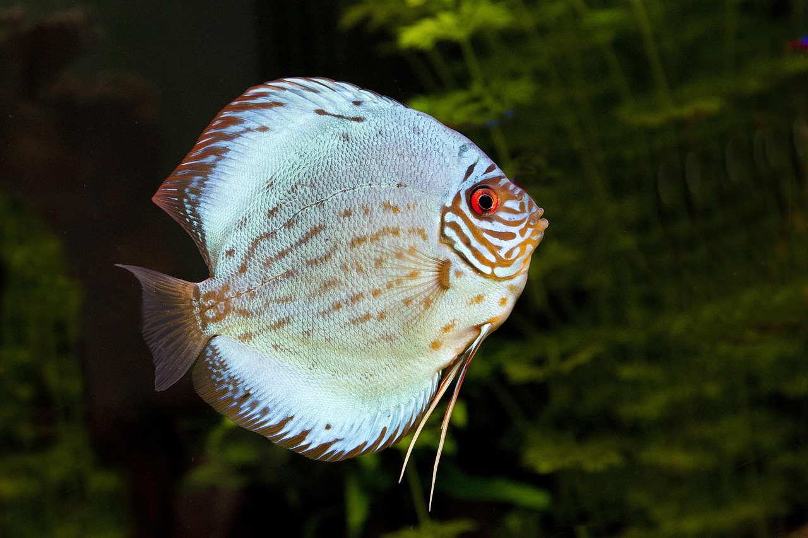

Las especies del género Betta son todas consideradas como peces "luchadores". Este género ha sido ampliamente popularizado por Betta splendens, que es hasta el día de hoy una de las especies más conocidas en el mundo de la acuariofília.
En 2019, el género Betta comprendía 73 especies descritas, incluidas varias de ellas durante la década de 2000, evidencia de que aún se esperan nuevos descubrimientos en este grupo. Todas las especies se encuentran en el sudeste asiático, incluyendo las islas de Indonesia.
La gran cantidad de especies se puede explicar debido a varios factores. Por un lado, el clima cálido y húmedo característico de la región ofrece diversos nichos y hábitats, como arroyos, ríos, lagos y pantanos. Algunas de las especies se han adaptado a condiciones de acidez extrema, con un pH inferior a 3.
Estas condiciones por ejemplo, corresponden al agua negra en los bosques tropicales. Algunos Betta son endémicos de áreas muy pequeñas, delimitadas por cadenas montañosas o grandes ríos. Como ocurre con muchos otros peces, el color del ejemplar evoluciona según la madurez, el sexo, las condiciones de reproducción y las variaciones geográficas. Los ejemplares de mayor edad suelen oscurecerse, 10 que dificulta la distinción de los patrones del cuerpo y del opérculo Mientras que los juveniles suelen tener una fisonomía diferente a la de los adultos.
Existen diferentes grupos, entre otros, B. coccina, B. foerschi, B. pugnax, B. splendens, B. hellica y B. unimaculata. Estos dos últimos se diferencian fácilmente por la forma de la cabeza. La mayoría de las especies se reproducen construyendo un nido de burbujas de aire o por incubación bucal.